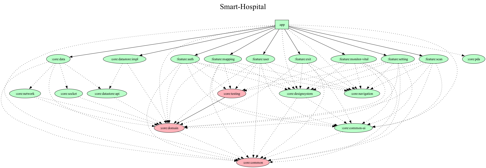

Overview
20개 이상 병원에 실 도입된 의료 Android 앱
PM
1명
Server
3명
Design
1명
Android
2명
내 역할
아키텍처 전환 주도
스캔 로직 공통화
실 도입 병원 20곳+
Features
병원 현장을 위한 6가지 핵심 기능
멀티 스캔 지원
M3Mobile · PointMobile PM · Bluebird PDA 바코드 스캔 및 CameraX + ML Kit 카메라 스캔 통합 지원
환자–기기 매핑
바코드 파싱 결과에 따라 환자·기기 매핑 및 해제. ParseBarcodeContentsUseCase로 sealed 분기 처리
활력징후 모니터링
WebSocket 기반 실시간 바이탈 수신. 일자별 DailyVitalSign 리스트 및 모니터링 화면 제공
런타임 병원 설정
QR 스캔 또는 수기 입력으로 서버 URL · OAuth · ScanType 동적 설정. 클라이언트 단 오입력 사전 검증
전역 이벤트 처리
로딩 · 스낵바 · 앱 재시작 · 종료를 EventHelper 채널로 일원화. feature 간 결합 없이 전파
API 로그 & 메일 전송
FileLoggingInterceptor로 api_log.txt 생성. 내부망 장애 시 앱 내에서 직접 메일 첨부 전송 가능
Architecture Improvement
SI 방식에서 공통 모듈 구조로의 전환
BEFORE — SI 방식
프로젝트별 "개발 후 폐기" 반복. 병원마다 코드베이스 복제, 공통 버그 수정도 각각 적용 필요. 신규 병원 추가 시 전체 재개발에 가까운 공수 발생
AFTER — 공통 모듈 구조
feature 모듈 기반 단일 코드베이스. 병원별 차이는 ScanType · HospitalConfig 분기로 흡수. 버그 수정 1회로 전 병원 반영
Architecture Detail

1 · 전체 모듈 구조 (21 modules)
Smart Hospital
2 · 의존성 방향 (Dependency Rule)
UI Layer
feature/*
Domain Layer
core:domain
Data Layer
core:data
Network / Local
core:network
core:socket
core:database
core:navigation을 통해 소통
3 · MVI (UDF) 상태관리 흐름
Step 01
UI Action
사용자 인터랙션 → UiEvent 발행
Step 02
handleEvent()
ViewModel 이벤트 처리 · usecase 호출
Step 03
reduce { copy }
불변 UiState 생성 · StateFlow 갱신
Step 04
UI Render
Compose StateFlow 구독 후 리컴포지션
EventHelper 채널로 처리 — feature 결합 없이 공통 이벤트 전파
4 · 스캔 추상화 (core:pda)
PDA Scan
M3Mobile
PointMobile PM
Bluebird
기종별 Native SDK
NoOpPdaManager (비-PDA 폴백)
core:pda
PdaManager
interface
ScanType으로 런타임 분기
DisposableEffect
생명주기 통합
Camera Scan
CameraX
ML Kit
카메라 기반 바코드
ScanType 값 하나로 PDA / Camera 경로 런타임 분기 — feature 코드는 스캔 기종을 알 필요 없음
5 · Build-Logic Convention Plugin (10개)
build-logic/convention
Implementation
app / feature / core 3계층 21개 모듈 분리. feature는 core에만 의존, feature 간 직접 참조 없음
BaseViewModel + UiState + UiEvent + reduce 패턴으로 상태관리 표준화
build-logic 컨벤션 플러그인 10개로 모듈별 Gradle 설정 일관성 확보
feature/mapping 모듈을 reference module로 관리. 신규 feature 작업 시 기준점으로 활용
PdaManager 인터페이스로 M3Mobile · PointMobile PM · Bluebird SDK 의존성 추상화
PDA 미사용 환경을 위한 NoOpPdaManager로 CameraX 경로와 안전하게 분리
병원 설정의 ScanType 값 하나로 런타임 분기 — feature 코드에서 스캔 기종 제거
Compose DisposableEffect 기반 리스너 등록·해제 일원화로 생명주기 누수 방지
FileLoggingInterceptor로 모든 요청·응답을 api_log.txt에 기록
FileLogUtil + 앱 내 메일 전송으로 현장 장애 시 로그 회수 표준화
AuthInterceptor + TokenManager로 OAuth 토큰 자동 갱신 처리
HTTP / API 에러 코드 분류 체계 정리 (ErrorHelper, HttpResponseException)
MonitorBioSocket으로 활력징후 실시간 수신 (core:socket 모듈)
MonitorRepositoryImpl에서 remote datasource + local datasource + socket 조합
BioSensing 도메인 모델로 변환 후 Flow로 상위 레이어 노출
ScreenFileStructureDetector
Screen 파일에 Route / Screen 외 구현이 섞이는 것 방지
ComponentsFileVisibilityDetector
컴포넌트 파일 visibility 규칙 강제
PreviewMustBePrivateDetector
Preview 함수 private 가시성 강제
PreviewRequiredDetector
주요 컴포넌트 Preview 누락 감지
SingleLineWhenBlockDetector
when 블록 단일 라인 규칙 적용
EnumObjectPascalCaseDetector
Enum · Object PascalCase 네이밍 강제
Tech Stack
CameraX · ML Kit Barcode Scanning · core:pda
카메라 바코드 스캔과 M3Mobile · PM · Bluebird PDA를 PdaManager 인터페이스로 추상화해 런타임 분기. NoOpPdaManager로 비-PDA 기기 대응
Multi Module · Clean Architecture · Hilt
app / feature / core 3계층 21개 모듈. build-logic 컨벤션 플러그인으로 일관성 확보. Hilt로 module-scoped DI 관리
Jetpack Compose · MVI (UDF)
UiState + UiEvent + SideEffect 기반 단방향 데이터 흐름. BaseViewModel + reduce 패턴 표준화. core:designsystem으로 테마 · 컴포넌트 관리
Retrofit · OkHttp · WebSocket
FileLoggingInterceptor로 API 로그 파일 생성. AuthInterceptor로 OAuth 토큰 자동 갱신. WebSocket(core:socket)으로 활력징후 실시간 수신
Room · DataStore (API/Impl 분리)
core:database에서 Room으로 로컬 데이터 영속화. core:datastore를 api/impl로 분리해 token · user · scan · hospital 설정값 독립 관리